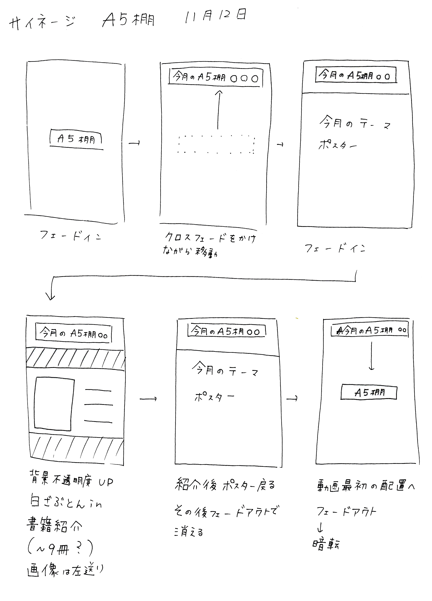

デジタルサイネージ
情報ライブラリ(大学図書館)に設置されているデジタルサイネージコンテンツの制作・更新を大学からの依頼として行っています。新着本情報やライブラリ内で行われるイベント等の情報を発信しています。
Library Information、新着本の紹介、月ごとにテーマが変わるA5棚の更新など、時期に合わせて様々な種類の動画を制作しています。
個人活動
使用ツール:Premiere Pro/Illustrator/Photoshop
製作期間:2015/01~
動画の動きを書き出す
どんな動画にすればいいのかを紙に書き出し、イメージを視覚化します。
この動画を制作するときは、どんな動画にすれば人が立ち止まるのかを考えました。
以前の動画はあまり動きがなく、変化が分かりづらいものであったため、少し大きな動きを入れることで目にとまるようにすることを決めました。
タブレット上での電子書籍の配列や、世の中にはどんなデジタルサイネージがあるのかなどを調べ、参考にしています。
より印象に残る情報伝達をする
書いたイメージ図を元に、Premiere Proを使用して動画を制作しました。この動画では、本の切り替えがよく分かるようにするため、スマートフォンなどの縦スクロールの動きに似せて制作しました。
今後の動画では、立ち止まる人に動画がどのくらいの長さなのかを知らせるために、バーを追加する予定です。
次年度の卒業研究では、デジタルサイネージコンテンツにおいての新たな表現方法について研究を行う予定です。